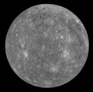
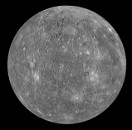

As the first object we pick an average human being, mass \(=\) 70 kg

$$F = {G \times { {m_1 \times m_2} \over d^2}}$$
Scary? Don't panic. It means that to know the amount of gravitational force between two objects you multiply the mass of the two objects together (\(m_1\) times \(m_2\)) then divide the result by the distance between them (\(d\)), and again by the distance. Finally, you multiply by a number called \(G\) which has the exact value needed to get the force right. Easy stuff. Let's play with it.
As the first object we pick an average human being, mass \(=\) 70 kg
The second object is... pick a planet!
change planet


 
Jupiter, Saturn, Uranus and Neptune are scaled down 10 times

Jupiter, Saturn, Uranus and Neptune are scaled down 10 times
At this very moment is at km from Earth and keeps moving!
The force it exerts on our average human being is very small, N if you like numbers.
As a comparison, a 1 liter bottle of water pushes down against your hand with a force of about 10 N.
What moving objects on Earth have a similar gravitational pull on us?
The fun begins. Pick any of the objects below.
The largest oil tanker in the world, fully loaded
A typical oil tanker, fully loaded

A carrier ship, fully loaded

A cruise ship, fully loaded

A train, with passengers

An Airbus A380, with passengers and fuel

A metro train, with passengers

A truck, reasonably loaded

Images
Average human: the icon is made by Freepik from www.flaticon.com and licensed under CC BY 3.0, source. Mercury, Venus, Mars: source (public domain.) Jupiter, Saturn, Uranus, Neptune: source (public domain.) Pluto: source and license. Oil tankers and carrier ships: momentbloom/Vecteezy.com. Cruise ship: lavarmsg/Vecteezy.com. Train: vector designed by Freepik. A380: freevector/Vecteezy.com. Metro: source and license. Truck: vector designed by Freepik. Whale: source and license. Other animals: Cartoon domestic and wild animals pack , free vector by Vector Open Stock.
Source code
The algorithm for the distance of planets from Earth: extracted from the Debian package astronomical-almanac 5.6 copyright © 2005 by Stephen L. Moshier and licensed under version 2.0 of the GNU General Public License. The other source code of this page (JavaScript, HTML, CSS) copyright © 2015 by Paolo Montrasio and licensed under GNU Affero General Public License version 3. Also using big.js, printf and a number thousandification snippet from here.
Misc
The mass of planets, objects and animals: from various Wikipedia pages. Absolute precision is not required for the purpose of this page. Research them yourself if you need truly correct values.
Web site by Connettiva — P.IVA. 05411020968


{kind=link}
{kind=link}
{kind=link}
{kind=link}